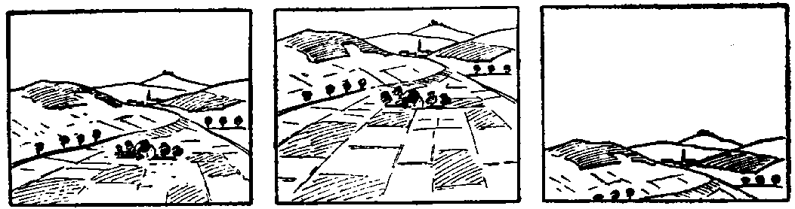

Manual del Vuelo a Vela
Wolf Hirth
1942
La enseñanza en la ladera
por
FRITZ STAMER
Considerando
ahora la enseñanza misma, empecemos primeramente por la enseñanza en la ladera, es
decir, en la falda de una montaña. Es el método más antiguo de enseñar y el que
empleó Lilienthal cuando en las montañas de Rhinow, cerca de Berlín, se lanzaba al
aire desde la ladera con su planeador de piloto colgado.
Pero luego el vuelo a vela se ha establecido también en
la llanura y se ha procurado otras posibilidades de envolar; con auto, torno o remolque
por avión. Sin embargo, estos medios no han desterrado el primitivo de la ladera, que es
el que sigue el verdadero método de enseñar el vuelo sin motor; los demás se usan
solamente a falta de terreno de condiciones apropiadas. El objetivo principal de la
enseñanza debe ser conseguir, con toda clase de circunstancias, que el alumno llegue a
piloto en el menor tiempo posible. El volar es una habilidad manual, como otras muchas, la
cual se distingue de las demás únicamente en que en los tiempos en que había pocos
aviones se consideraba como rara o al menos especial; por lo tanto, resultó que al volar
se le dio un valor mayor que el que en realidad le corresponde.
Hoy se puede decir, con toda seguridad, que no es
problema alguno hacer que vuele cualquier hombre de salud normal. Pero éste no es el
objeto de la enseñanza, la cual sólo debe darse a quienes, además de « saber volar »,
sean capaces de emprender algo. Eso indica desde luego que lo difícil no está en «
volar ». La familia de los pilotos de velero, como toda la gran familia de los aviadores,
coloca en primera línea de valores a los capaces de hacer alguna clase de proezas: ora
traten de conseguir marcas de altura, de distancia o de duración; ora ensayen nuevas
posibilidades del vuelo a vela; o ensanchen el campo de nuestros conocimientos sobre la
atmósfera, o, como profesores, instruyan a los jóvenes, o hagan las pruebas de nuevos
tipos de avión y ayuden con sus consejos al constructor para que haga aviones mejores y
más seguros, o ensayen en el vuelo acrobático nuevas y bien pensadas figuras, o,
después, por su prudencia y su absoluto aplomo, lleguen a pilotar los grandes aviones del
tráfico aéreo, o finalmente, por sus inclinaciones y su circunspección, lleguen a ser
perfectos pilotos militares.
Si se considera esta larga y no agotada exposición de las
posibilidades de un piloto, se ve claramente que, para realizarlas, es ciertamente
condición indispensable « saber volar »,
pero que además debe figurar en primera línea el hombre, como elemento principal y
precisamente como elemento de carácter, que sea capaz de llevar adelante una tarea.
Ya se ha expuesto en el primer capítulo que el profesor
de vuelo tiene el deber de seleccionar entre los muchos jóvenes que pretenden llegar a
ser pilotos.
El profesor debe ser pedagogo y psicólogo y según esto
podrá ser él a su vez adiestrado en innumerables lugares del país. ¿ De dónde deben
proceder los muchos pedagogos y psicólogos que son necesarios ? Generalmente, los
profesores de vuelo son cargos honoríficos desempeñados por jóvenes trabajadores. Es
absolutamente necesario hacerles fácil su tarea; es decir, el modo de enseñar debe ser
de tal naturaleza que quienes no reúnan condiciones abandonen voluntariamente la
enseñanza, sin intervención del profesor; sólo hay que dar la bienvenida a los más a
propósito para aviadores, teniendo en cuenta las cualidades que, como hombres, deben
tener. En otros términos: la enseñanza debe ser prueba de cualidades.
La enseñanza del vuelo sin motor en una ladera cumple
esas condiciones de manera perfecta.
El joven piloto debe separarse, durante algún tiempo, de
su ambiente habitual y de sus acostumbradas comodidades; tiene que dejar la olla de la
casa de los padres. Debe acostumbrarse a la vida en común con otros compañeros y no
puede pensar sólo en sí mismo. A esto se añade que debe trabajar de veras
corporalmente, pues él mismo después de cada vuelo tiene que subir con sus camaradas
el aparato, ladera arriba, ayudando a su remolque.
Tiene que aprender a volar allí donde vuelan los pájaros
veleros, allí fuera, en la libre y hermosa naturaleza y así se le ofrece desde el primer
momento el profundo significado y la gran belleza del vuelo a vela. Ningún escape ruidoso
ni vapores de bencina acompañan al vuelo sin motor. El alumno debe comprender en seguida
que el avión sin motor no es un medio auxiliar económico, porque el vuelo con motor sea
caro, sino que es el medio que permite realizar el verdadero vuelo humano.
Allí, en la ladera, en donde el profesor está sentado en
medio del grupo de sus discípulos, allí, en donde todos están lejos de la ciudad y cada
uno sólo tiene ante sí a los demás, es en donde nacerá la verdadera camaradería, el
verdadero espíritu de los futuros pilotos. Esta es siempre la mejor base de la
formación de los jóvenes.
Desgraciadamente, no en todas partes hay laderas
apropiadas; desgraciadamente, hay en nuestro país grandes comarcas llanas como una
era de trillar (Se recuerda que el autor habla de Alemania. El lector aplicará a su
propio país estas consideraciones, en la medida que corresponda. - N. del T.),
así que es inevitable la enseñanza por remolque de automóvil o de torno. Sin embargo,
en estos casos, si después de buscar con el mayor interés no se ha encontrado nada
apropiado, se puede hacer una excursión aprovechando unas vacaciones a algún sitio en
donde haya terrenos propios para el vuelo a vela, no retrocediendo en esta idea ante
ninguna circunstancia de comodidad o de disponerse de pocos días o inconvenientes
análogos. La comodidad no hace más que debilitar. Una enseñanza demasiado rápida nunca
llega a ser profunda y permitirá quizá el « saber volar », pero nunca dará el
espíritu de buen aviador. Nunca debe olvidarse que se es aviador por ese espíritu.
Pero además, la enseñanza en ladera tiene también
ventajas puramente técnicas. El profesor está en el sitio en donde tienen efecto los
envuelos, desde el cual el aparato planea lentamente hacia el llano; ve así el aparato
por la popa, de modo que no se le escapa ningún movimiento de los mandos, y así no
solamente puede decir al alumno lo necesario sobre el conjunto del vuelo, sino que le
puede indicar lo que ha hecho en cada maniobra de timón y enumerarle, una por una, todas
las faltas que haya cometido. Esto no se puede hacer si se mira el vuelo desde abajo,
hacia el cielo, como ocurre con la enseñanza por remolque, y así pasa que al profesor se
le escapan faltas pequeñas que no puede corregir, y la enseñanza no es perfecta, puesto
que su objeto debe ser que los alumnos lleguen a volar con absoluta corrección.
Hay algunos aparatos con los que, si se vuela con
bastante velocidad, se pueden hacer fullerías; hasta hay aparatos que vuelan sin que
se note las maniobras de mando más o menos falsas que hagan los pilotos. ¿ Debe ser
éste el modo de enseñar ?
Si tales alumnos vuelan después en aparatos mejores y
más sensibles, fracasan.
Todo profesor debe estar convencido de que su discípulo
es una tarjeta de visita que él entrega; si el discípulo va a otra escuela o a otro
grupo, en su modo de volar se juzga del profesor que antes tuvo.
¿ Cómo se hace la enseñanza en la ladera ? El grupo va
con su profesor hasta el terreno de los vuelos, que debe haber sido cuidadosamente
escogido, libre de obstáculos y que sea casi llano para los primeros saltos, cosas todas
que hoy son generalmente conocidas.
El profesor determina entonces exactamente la dirección
del viento y manda colocar el aparato proa al viento y esto hasta con exactitud
pedantesca. Halla también la velocidad del viento para poder determinar el número de
individuos que debe componer el equipo de envolar: cuanto más fuerte sea el viento tanto
menor el número de individuos que tiren de los tirantes.
El profesor se arrodilla al lado del alumno que está ya
sentado en el aparato y él mismo le ata el cinturón y le explica lo que debe hacer; le
indica el punto que debe tomar como referencia de dirección en el vuelo y que el alumno
no debe perder de vista durante todos los primeros vuelos. Después que el profesor se ha
convencido de que el alumno ha comprendido bien todo lo que le ha dicho, se va hacia el
ala izquierda, y la toma él mismo para acompañar el aparato durante el despegue.
Todo esto puede parecer innecesario; ¿ por qué debe ser
el mismo profesor el que ciña el cinturón al alumno al principio ? ¿ Por qué debe
ser el profesor mismo el que acompañe al aparato al envolar ? ¿ Por qué debe
explicar, cada vez, lo que debe hacer el alumno en el vuelo, si siempre es para todos lo
mismo ? Esto tiene una razón concluyente. El principiante tiene más confianza que en
nadie, en su profesor; el principiante debe saber que el profesor se toma trabajo, no
sólo para todo el grupo, sino para cada uno en particular; antes de envolar, el profesor
debe dar al alumno gran tranquilidad y confianza. Lo que ha dicho el profesor, lo que el
profesor ha hecho, está bien dicho y hecho, y a ello puede confiarse el principiante; él
mismo está cogiendo el ala y en cierto modo le lleva, como de la mano, al aire. ¿ Qué
pensaría el alumno si algo no se hubiese hecho bien, si se le hubiese exigido demasiado o
si algo no estuviese en perfecto orden ?
Después, cuando ha terminado el primer arrastrón o salto
(Se ha dado, en nuestro país, este nombre al primer paso del vuelo sin motor, que no es
más que ir rastreando por el suelo o con una pequeña elevación y en un
trayecto corto. - N. de T.), el profesor hace conocer a su alumno la falta
cometida y sus causas probables, así como el medio de evitarías. Esta crítica, que no
puede llamarse reprensión, la hace el profesor con la mayor tranquilidad y aplaude
únicamente lo que merezca alabanza: debe, desde el primer momento, infundir en el alumno
la confianza de que llegará a hacerlo bien. El profesor debe atajar, desde el principio,
la tendencia de los condiscípulos a hacer observaciones sobre un vuelo que se acaba de
hacer, e impedir especialmente se forjen la idea de que la crítica que cada uno hace sea
la más acertada, pues todo esto no hace más que producir confusión.
El profesor debe sobre todo saber claramente, tanto en el
planteo de los temas como en la crítica, que el alumno no lo puede aprender todo de una
vez, sino una cosa después de otra; por tanto, nunca propondrá temas que exijan al
alumno el manejo de todos los mandos, y naturalmente sólo debe hacer la crítica sobre
aquello en que el alumno debe poner cuidado.
Tres mandos tiene el avión: mando de altura, mando
transversal y mando de dirección. Después que el alumno ha hecho de dos a cuatro
arrastrones, se le pone ya a hacer vuelos muy cortos o saltos, con los que empieza a
encontrarse en el aire, y con ello se presenta la ocasión de actuar sobre el timón de
altura como cosa completamente nueva y desacostumbrada. Los movimientos hacia la izquierda
o hacia la derecha y el cuidado del equilibrio lateral son corrientes en otros vehículos,
por ejemplo, en la bicicleta y hasta en el mismo andar. Por lo tanto, hay que recomendar
que, en los primeros pequeños vuelos o saltos, la atención del alumno se dirija, en
primer término, a la maniobra del timón de altura. El alumno debe esforzarse desde
luego, únicamente, en conservar la posición correcta en altura, dejando los mandos
transversal y de dirección, cuyas funciones ya naturalmente ha aprendido en la
posición media.
Si en los primeros saltos el aparato se desvía algo de su
ruta, no importa, porque el terreno de vuelos se habrá escogido libre de obstáculos;
si el aparato se inclina algo transversalmente, tampoco importa, porque los planeadores
para principiantes son tan estables, alrededor del eje longitudinal, que por sí mismos
recuperan si se inclinan. Pero las alas pueden también estar tan altas de un lado que
pueda llegarse a una posición bastante inclinada antes de llegar al suelo y producirse
entonces la temida «caída del borracho».
Si el alumno ha de servirse correctamente del timón de altura, se requiere que tome
puntos de referencia, con relación a los cuales conozca su posición. Para esto sirve
el punto de referencia de dirección tomado en el horizonte o el horizonte mismo: si el
principiante tira de la palanca demasiado, el horizonte se hunde en su campo de vista, y,
si va sentado naturalmente en el asiento, sin asomar la cabeza, ve más cielo que tierra;
si empuja la palanca, el horizonte se eleva otra vez en su campo de vista. Si se ve casi
todo tierra y sólo una pequeña faja de cielo, es tiempo de tirar de la palanca porque si
no pronto vendrá el crujido; ese aspecto del panorama indica que el avión va demasiado
picado (fig. 86).

Fig. 86. Vuelo en ladera. Izquierda: Vista del horizonte en vuelo recto normal. - Centro: Demasiado picado. - Derecha: Demasiado encabritado
Después
de pocos saltos el alumno tendrá ya cierta idea del modo cómo obra el timón de altura.
Seguramente que aun lo manejará precipitada y bruscamente y hará algo de « galope »;
pero, sin embargo, ya puede dirigir su atención, poco a poco, hacia el otro mando, el
mando transversal. También ahora, si va bien sentado en su sitio, se da cuenta de su
posición mirando al horizonte; si el horizonte aparece inclinado en su campo de vista, es
que su avión va caído de un lado y es tiempo de enderezarle por el mando transversal.
Si el alumno intenta ya, en otros vuelos, mantener
siempre ante su vista el punto de referencia de dirección, verá que unas veces le ve a
la izquierda y otras a la derecha, y esto significa que el aparato quiere salirse de su
ruta, y entonces hay que actuar sobre el mando de dirección, con lo que el punto de
referencia volverá, otra vez, a permanecer en el centro del campo de vista.
Muchas cosas más pueden ocurrir en el principio de la
enseñanza con la serie de los timones, pero me parece que lo mejor es empezar por el
timón de manejo más difícil.
El profesor se fijará entonces en las diversas faltas que
irán cometiendo los principiantes. En primer lugar, se nota que mandan demasiado y esto
proviene de que un principiante siempre cree que un avión es algo cuyo equilibrio hay
que temer que se pierda a cada momento. Tiene la sensación de que el aparato puede
bascular de repente hacia un costado y que, por lo tanto, hay que estar al acecho
constante para impedir a tiempo esa desgracia con la acción del mando. El profesor debe
convencer al alumno de que el avión vuela aunque él no intervenga, dejando quietos los
mandos, y de que solamente será necesaria alguna pequeña acción del mando como
corrección en pocas ocasiones, tratándose, como ahora es el caso, de vuelo corto en
línea recta.
Una vez que el alumno se haya convencido de esto dejará
ya de sentarse contraído en el aparato, y sus músculos se relajarán. Es claro que si
cree que en cada segundo va a tener una sorpresa estará en el aparato tenso y contraído;
la consecuencia es una reacción, precipitada y tosca, de la mano sobre el mando, y en
cuanto los músculos se relajan la reacción es natural y suave. El mando de un avión
está ideado de modo tan genial que no puede dar lugar a falsa maniobra, si el cuerpo del
que manda reacciona de un modo natural ante las variaciones de posición que puedan
presentarse.
Por ejemplo, si el avión se encabrita, el piloto traslada
instintivamente su peso hacia delante se
inclina, extiende los brazos ante sí y con ello lleva la palanca también hacia delante y
hace « picar » el aparato.
Si el avión cae de proa, el alumno trata de incorporarse,
recoge los brazos, lleva consigo la palanca y resulta « tirando » de ella.
Si el avión baja un ala inclinándose, el alumno trata de
llevar su peso hacia el ala levantada, y basta que lleve consigo la palanca, en este
movimiento instintivo, para que con ello « enderece » su aparato.
Por consiguiente, el profesor no debe oponerse a que al
principio haga el alumno los movimientos de mando, hasta cierto grado, con todo su cuerpo;
con ello llegará a adquirir mayor naturalidad. Lo importante es que en sus movimientos
lleve efectivamente consigo la palanca y no la considere como polo fijo, alrededor del
cual todo debe girar.
El timón de dirección, como ya se ha dicho, puede
dejarse quieto en los primeros vuelos de corta extensión; de lo que hay que cuidar es de
no moverle involuntariamente hacia algún lado y que no se mande en sentido opuesto a la
rotación iniciada con el mando transversal. Si esto ocurre es señal de que el alumno
todavía no está con naturalidad en el aparato y de que tiene las piernas estiradas y se
ha olvidado de ellas.
Aparecen también dos factores que al profesor le dan
mucho que hacer y que en otros vehículos han pasado a ser costumbre, pero que en el vuelo
hay que quitarlos del pensamiento. Primeramente está la idea de « ¡ frenar ! ». Si en automóvil, motocicleta,
bicicleta, coche de caballos o lo que quiera que sea, se presenta una situación
comprometida, aparece como idea salvadora la de « frenar », « pararse ». El movimiento
instintivo de frenar es recoger los dos brazos o uno al menos; de aquí el procedimiento
ordinario de la palanca del freno, tirando de ella.
En el vuelo es completamente distinto. Si aquí se
presenta una situación de esa clase, lo que se debe hacer es siempre completamente lo
contrario; es decir, empujar la palanca, aumentar la velocidad. En esto el profesor debe
poner atención también desde los comienzos, porque si no muchas veces resulta
incomprensible lo que hace el discípulo.
Otra falta que procede de la costumbre en los otros
vehículos es el error en el mando de dirección y que nace de la inversión respecto al
guía de una bicicleta. Si en un avión se quiere ir a la derecha, hay que mover hacia la
derecha el timón de dirección y por tanto hay que « meter » el pie derecho,
empujando la palanca de pedales a este lado. En la bicicleta hay que hacer con el guía,
como se sabe, todo lo contrario. A algunos alumnos les es difícil hacerse a esta idea y
hasta proponen permutar los cables de mando para que resulte el mando al revés. Sin
embargo, el procedimiento adoptado es el más acertado. Cuando más tarde se vuele en
curva, en la que es necesario mandar a la vez el timón de dirección y los alerones, para
conseguir la inclinación determinada que a cada radio de curva corresponde, entonces,
si se actúa, por ejemplo, llevando el mando transversal a la derecha, la palanca obliga,
con esa maniobra, a estirar la pierna derecha, es decir a mandar a la derecha el timón de
dirección. El profesor puede ejercitar al alumno fácilmente en esto, haciéndole que
mantenga bien dobladas las rodillas, y entonces, al accionar el mando transversal, se
verá obligado a apartar la pierna correspondiente.
También hay que hacer notar otra propiedad, que viene de
la costumbre y representa un peligro para el vuelo. Si el hombre tiene la sensación de
que se cae, extiende hacia delante los brazos. Aquí no hay ni que hablar de eso que es
completamente contraproducente. No cabe duda que es un hecho el que casi todas las
personas tienen esa costumbre. Si un alumno que va volando ha picado mucho y la tierra
sube hacia él, entonces se sobrecoge y le acomete bruscamente el susto que da al « ¡
que te caes! ». En este momento extiende los brazos y se cae efectivamente. Siempre puede
hacerse la observación de que en los momentos en que el tirar de
la palanca podría evitar una caída, resulta que, un modo incomprensible, el alumno la
empuja.
Es bueno cuando se dispone de un prado limpio de piedras
que el profesor lleve a él sus alumnos para hacer ejercicios de caídas y análogos,
con objeto de acostumbrarlos a los movimientos no mandados del avión. Si se cae con un
avión es un error completo extender hacia delante los brazos o piernas; lo procedente es
encogerse como una pelota y llevarse un brazo, al menos, a la cabeza para protegerla.
Muchas heridas pueden evitarse de este modo.
Cuando los primeros vuelos cortos se llegan a hacer con
limpieza, la enseñanza va generalmente ya muy de prisa. El profesor escoge para ello
científicamente el terreno apropiado. Nunca se debe permitir al alumno que para la
dirección tome un punto de referencia que esté hacia abajo o en el terreno. Esto hay
que tenerlo presente desde luego en los ejercicios de virada. También debe procurar el
profesor que, desde el principio, el alumno tome la cosa en serio y no se ponga a hacer
monerías; por ejemplo, soltar la palanca algunos segundos estando en el aire o hacer
señales a la gente que está presenciando el vuelo, pues hay que exigir siempre
disciplina completa. Por consiguiente, también hay que exigir a los alumnos adelantados
que los vuelos los hagan sujetándose exactamente a la orden que se les haya dado, y
cualquier modificación voluntaria de esa orden ha de mirarse como falta de disciplina.
El profesor no debe ser, bajo ningún concepto, el « cuco » de su grupo; todo lo
contrario, pero en cuanto a disciplina de vuelo, debe ser inexorable. Si no puede o no
sabe mantener esa disciplina, debe ser apartado de su cargo, aunque sea gran aviador.
Cuando el alumno practica ya perfectamente el vuelo recto,
puede empezar con las viradas. Esto hay que tomarlo al pie de la letra. Bajo ningún
concepto se empezará con las viradas antes de que el alumno vuele exactamente en línea
recta, pues, de lo contrario, sólo llegará a ser un incorregible chapucero. Si el alumno
sabe volar correctamente en recta y en curva, sabe ya lo más esencial; todo lo demás no
es tan difícil. Volar a vela viene por sí mismo, si sabe dónde hay ascendencias y
dirige su avión hacia ellas. Aterrizar, resbalar, vuelo acrobático, todo se aprende ya
sin dificultad, cuando se domina, cuando se ha llegado a hacer un viraje correcto.
Querría poder llevar hasta lo más íntimo de la conciencia de los profesores de vuelo lo
importante que es enseñar a los alumnos a volar correctamente en curva.
¿ Qué valor tiene la afamada enseñanza rápida ? ¿
Qué se consigue con que haya muchos pilotos con el título C ? Sólo hacer que haya gran
número de jóvenes no seleccionados y en parte echados a perder, sin esperanza de ser
nada como pilotos y que desacrediten el vuelo sin motor dondequiera que vayan. Basta
hablar una vez con un profesor que tenga la misión de poner a punto, como pilotos, a
tales personas para convencerse de que ello es tarea más difícil que con principiantes.
A cualquier persona que, profesionalmente o a título
honorífico, ejecute un trabajo se le pide que lo produzca de la mejor calidad; por
consiguiente también hay que pedir al profesor de vuelo que no dé por bueno un alumno
chapucero. El alumno, por su parte, debe también saber que el profesor no está para
hacerle a él las pruebas y darle distintivos, sino que tiene el deber de enseñarle a
volar correctamente, no teniendo importancia el tiempo que esa enseñanza exija, pues
sobre lo que aprenda en el vuelo sin motor se edificarán todos sus conocimientos del arte
de volar. ¿ Por qué es tan difícil virar y debe enseñarse con tanto cuidado ?
La razón de que se pueda ver en una virada si el que la
hace sabe volar es sencilla. Muchos saben hacer rizos y otras acrobacias, pero volar una
curva correcta es otra cosa. En la curva se emplean todos los mandos, sirviéndose de
ellos en determinada sucesión con toda finura para describir una curva suavemente, libre
de objeciones en cada una de sus fases.
¿ Cómo aprenderá entonces a virar el alumno ? A ello
hay que decir, en primer lugar, que el alumno no debe iniciar una virada si el avión no
va volando con la velocidad debida. Una virada es un cambio de dirección; por tanto, el
alumno debe empezar por actuar sobre el mando de dirección, puesto que para ello está.
Para cada cambio de dirección corresponde determinada carrera del timón, lo cual se
sabe ya por lo que pasa en otros vehículos. En el ferrocarril las curvas están
peraltadas, lo mismo que en los autoestradas y en las buenas carreteras. En los circuitos
de carreras como, por ejemplo, en las carreras de bicicletas, el peralte es muy
pronunciado. Si se observa cómo van los corredores, o hasta los caballos de carreras,
se verá que van muy inclinados. Esta inclinación es una necesidad porque, de lo
contrario, la fuerza centrífuga lanzaría al cuerpo que se encuentra en estado de
movimiento circular. En el aire, naturalmente, ocurre lo mismo. Si un piloto tratase de
virar sin volar inclinado, el aparato sería desviado lateralmente hacia fuera de la
curva recibiría el viento oblicuamente y acabaría por entrar en barrena, porque no
está organizado para volar en esa posición (Este movimiento se llama, en general,
derrapar, y en este caso especial, derrape centrífugo. - N. del T.). Por lo
tanto, la inclinación transversal es un hecho que necesariamente debe acompañar a la
variación de dirección.
Esto significa que el alumno, inmediatamente después de
maniobrar el timón de dirección, tiene que actuar sobre el mando transversal. Con el
timón de altura hay que cuidar que, durante la virada, se mantenga la velocidad
necesaria; es decir, empuja la palanca si la velocidad disminuye o tira de ella, si la
velocidad se hace excesiva. Casi siempre deberá tirar un poco, pues la mayor parte de los
aviones pican al virar (Lo que es consecuencia lógica de la virada.-. N. del T.);
si no tira de la palanca, el centro de gravedad del aparato no describiría un arco de
círculo horizontal, sino una línea en espiral descendente (En realidad, una hélice
descendente. - N. del T.). El piloto dice : « El avión se atornilla en la curva».
También en la curva sirve el horizonte como elemento de
referencia para la posición correcta; el horizonte, aun cuando se vea inclinado en el
campo de vista, debe moverse estando siempre a la misma altura. Igualmente se puede
enfilar el horizonte con algún punto de la proa del aparato y hacer que este último vaya
permaneciendo constantemente en la línea de horizonte. Pero en las viradas se
presentan, además, con frecuencia, otros fenómenos nuevos para el principiante; con
muchos aviones ocurre que una vez que han tomado la inclinación transversal necesaria se
ponen a describir una curva cada vez más cerrada.
Si se piensa en que el camino recorrido en una curva por
el ala exterior es mucho mayor que el recorrido por la otra, se ve claramente que llevará
mayor velocidad y, por lo tanto, recibirá mayor sustentación. El piloto recobra la
posición normal de vuelo con la acción lenta del mando transversal y, del mismo modo,
vuelve a su posición normal el timón dé dirección. Si la inclinación fuese en
aumento, entonces iría quitando mando a los timones transversales o alerones. En todo
caso, el timón de dirección se volverá, a lo menos, a su posición media, es decir no
puede ya estar en la posición de virada. Muchas veces, para enderezar el avión es
necesario también contramandar no sólo con los alerones, sino con el timón de
dirección. Esto no es una falta, sino que, al contrario, es necesario muchas veces. En
ningún caso se mantendrá el timón de dirección en posición de virar y el mando
transversal en posición de contramando. Este contramando es la falta más grave que un
piloto puede cometer: es una incorrección de pilotaje que ha dado lugar a muchas caídas.
Si en algunos aparatos, para hacerlos virar debidamente,
es necesario recurrir a tales maniobras de mando, ello no es prueba de que también así
se puede virar, sino de que el avión tiene un imperdonable defecto en sus propiedades de
vuelo que tendrá por causa o un error en la distribución de cargas o una repartición
defectuosa de las áreas de proyección lateral del fuselaje o bien una rigidez de
torsión del ala menor que la debida.
Si el piloto, por alguna razón, quiere hacer una virada
ceñida, es decir, una virada en la que el avión verdaderamente « está sobre un ala
» entonces se presenta la llamada permutación de mandos (Esta virada se considera ya
como acrobacia, que se llama « virada sobre el ala ».-N. de T.), esto es:
para mantener la virada ceñida hay que actuar sobre el timón de altura tirando
fuertemente de la palanca, y el mando transversal, una vez conseguida la inclinación
deseada, se vuelve a la posición normal o algo en contramando. El timón de dirección
sirve ahora para mantener, sobre la línea de horizonte, el punto escogido en la proa del
fuselaje, como también se regula con él la velocidad de vuelo. Por lo tanto, como se ve,
los mandos están permutados.
El alumno debe aprender a manejar los timones
sucesivamente para saber servirse de ellos con perfección, y a medida que va avanzando
la enseñanza van uniéndose los mandos, es decir, al emprender las viradas ya viene la
maniobra combinada de los mandos lateral y transversal.
Al cesar la virada aprende el alumno a volver el timón de
dirección a su posición normal, puesto que ya ha de cesar el giro y entonces debe
enderezar con el mando transversal y, si es preciso, ese efecto habrá de conseguirlo con
los dos mandos a la vez, el de dirección y el transversal. Cuando ya se tiene más
seguridad el enderezar, al salir de la virada, lo liará con los dos mandos
simultáneamente.
Pero todavía decimos otra vez para que se aprenda bien:
¡
Nunca se hará el mando cruzado, esto es nunca
se volará en contramando transversal !
Hay
aviones de concurso que tienen deliberadamente y hasta algunas veces enorme estabilidad de
vuelo en curva. De esto no hay que ocuparse aquí, en donde se está tratando de
enseñanza. Naturalmente, el aprendizaje sólo puede y debe hacerse en aparatos con
propiedades de vuelo normales. El piloto que sabe volar correctamente se acomoda enseguida
al vuelo en aparatos con propiedades especiales. Pero, en cambio, si hubiese sido
enseñado a base de esas propiedades, nunca seria buen piloto.
Una vez que el alumno sabe ya virar, hace las pruebas para
el título B. Pronto puede hacer después las pruebas para el C, pues este título sólo
exige, aparte de que haya ascendencia, saber virar. Si ya sabe virar, puede buscar los
lugares en que haya ascendencia, y puede estarse allí el tiempo que quiera, puesto que
entonces volará a vela. Vuela a vela no en un aeródromo ni sobre una ciudad, sino en la
ladera, allí donde empezó Lilienthal, donde los primeros pilotos de velero rompieron el
tratado de Versalles en lo relativo a aviación, donde los Bussard, los Wehien y los Palke
volaron a vela; allí es donde le corresponde volar al piloto de velero. Vuela sobre las
montañas, afuera, en la libre Naturaleza.
El vuelo a vela se ha abierto también, ante sí, las
llanuras; no le son tan necesarias las montañas como antes; pero no es que se vuele o
en la ladera o en el térmico o delante de un frente como cosas distintas, sino que todas
las posibilidades de vuelo a vela están, en el fondo, unidas entre sí. Donde fracasa
el térmico hay que tomar como apoyo una ladera, hasta que se pueda seguir volando; se
puede llegar a un térmico desde la ladera tan bien como desde el remolque por avión, o
en todo caso, desde el remolque por torno.
Pero aprender hay que hacerlo allá, en la falda de la
montaña; en ella están las raíces del vuelo a vela. De la ladera, de sus viejas
raíces, sacará siempre otra vez nuevas energías.
Sé que el profesor de vuelo tiene algo más de trabajo en
la ladera para enseñar el vuelo en curva correcto, porque un círculo completo exige
tomar bastante altura sobre el punto de salida. Pero también volar un arco de 90º con
absoluta corrección enseña a volar en curva. Cuanto más importancia dé el profesor
al aprendizaje de la virada en la ladera tanto más ensalza el método de enseñar en las
faldas de los montes.
Volar a vela no es un recurso porque no se puede volar con
motor. Volar a vela ha llegado a ser un género propio de vuelo, un movimiento de afición
de la juventud al arte de volar.
Todo el que emprenda el vuelo a vela debe considerar que
únicamente se puede mantener toda la originalidad e íntimo espíritu del vuelo a vela
llevándolo, siempre que sea posible, otra vez a la ladera y dejándole allí donde
creció, donde le hizo fuerte el espíritu, el indestructible espíritu del Rhön.